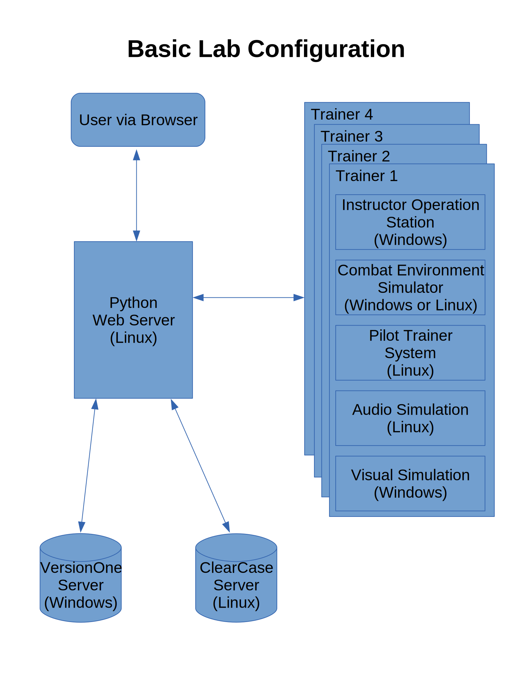

LabConfig Project Details
light webserver that generates dhtml with our lab's current configuration, daily build status, and merge history related to backlog items. Can only use built in Python modules
Weekly Goals
- week 1: Have project goals laid out and weekly roadmap to completion and package layout created in GIT
- week 2: Create DHTML template
- week 3: Have WSGI serve DHTML template with made up data, Create test plan
- week 4: Create mock services for testing
- week 5: Get version information from trainer components
- week 6: Get build information from build server
- week 7: Get merge information from ClearCase server
- week 8: Debug & Refine
